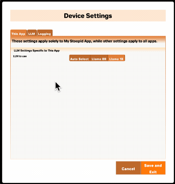
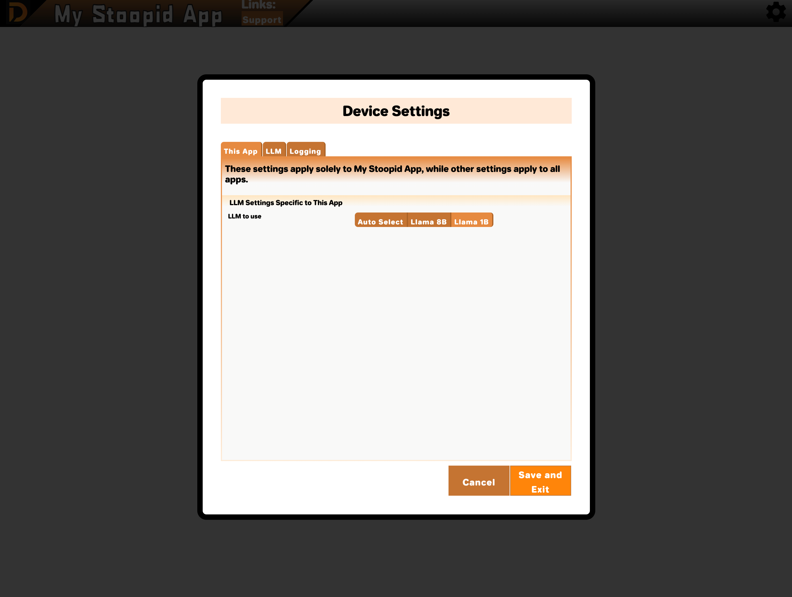
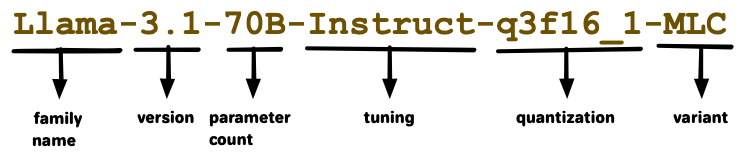
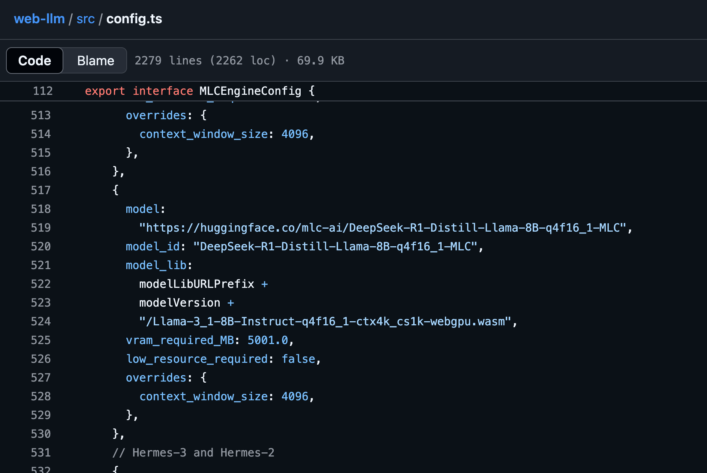
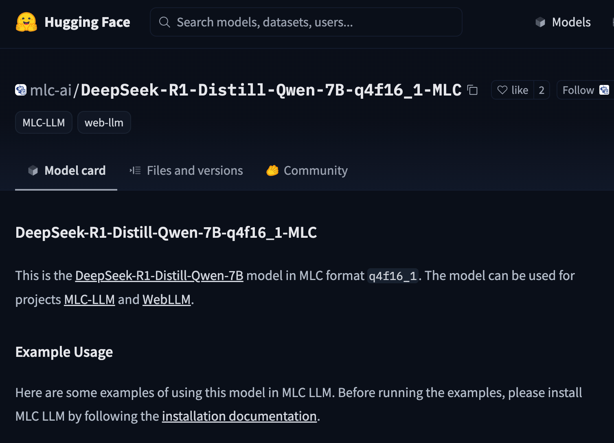
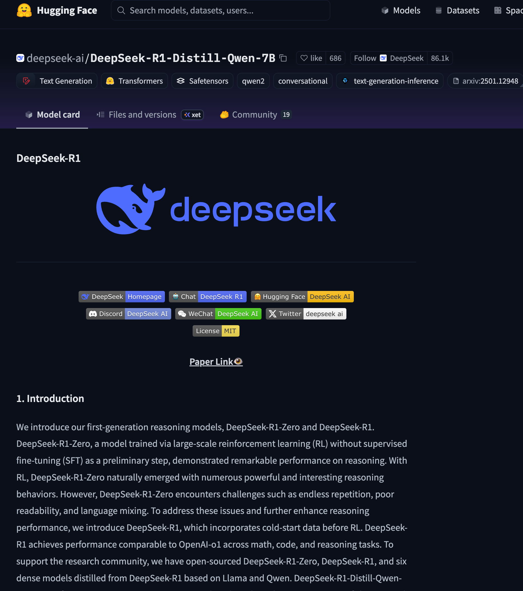

Adding Multi-LLM Support to Your Decent App

Overview
As of version 2.3 of the create-decent-app (CDA) tool, the CDA-generated source will allow developers to configure their apps to support more than one LLM. And there are some nice features that allow the app user to choose their preferred model as well as provide guidance to the user on which model to use. We also try to take load off the user by auto-selecting the best available model for them within app-developer-approved choices.

This new capability may or may not be something you want to use in your app. It can be good for making the app available to more users with varied hardware and giving them options to fit their taste. But it can also make more work for you.
In this article, I'll describe how to update your app to support multiple LLMs. And then we'll talk strategy, covering questions like: When would you want to include multiple LLMs? What is the extra work involved in selecting and maintaining them? And which models should you choose to support in your app?
Table of Contents
Configuring Multiple LLMs
After you've used CDA to generate project source code for your app, open the /public/app-metadata.json file in a text editor. The file will contain text like what you see below.
{
"id":"stoopid-app",
"name":"My Stoopid App",
"description":"This app's mission is to be the stoopidest app.",
"supportedModels":[
{"id":"Llama-3.1-8B-Instruct-q4f16_1-MLC-1k","appBehaviorSummary":"2025 Decent default model"}
]
}Inside the file, you'll see a supportedModels array value with only one element. It will be described as "2025 Decent default model" or something similar. You can change this to an entirely different model if you like. Or you can add another supported model to give your app users more options.
The model ID must match one of the IDs found in the WebLLM config source. (Immediately, I feel terrible for sending you to source code on Github. We'll try to come up with something nicer in the future, but this is the current source of truth.) You might also wonder how to make sense of the 130+ available model options. See the "Which Models to Offer" section below for a few hints.
But let's say that you want Llama-3.2-1B-Instruct-q4f32_1-MLC (model ID) as another option. Add a second element to the supportedModels array within app-metadata.json.
{
"id":"stoopid-app",
"name":"My Stoopid App",
"description":"This app's mission is to be the stoopidest app.",
"supportedModels":[
{"id":"Llama-3.1-8B-Instruct-q4f16_1-MLC-1k","appBehaviorSummary":"2025 Decent default model"},
{"id":"Llama-3.2-1B-Instruct-q4f32_1-MLC","appBehaviorSummary":"Faster, smaller, and not as smart."}
]
}The order that you specify models will tell the auto-select algorithm your preference order as the developer. The algorithm is a little complex to explain, but your ordering is basically a tiebreaker for when multiple models seem like they could work for the user.
Attributes to specify:
| Attribute | Explanation |
id | A model ID matching one of the models found in the WebLLM config source. |
appBehaviorSummary | A short description shown to the user of how the model works inside your app. Try to give the user an idea of why they may or may not want to choose this model, e.g. "Runs faster, but tends to hallucinate more" or "Better support for Spanish and French" or "Enables the visualization feature". Rather than saying something generally true about the model, try to say what the impact of choosing it will be within your specific app. |
beta (optional) | Add "beta":true and the user will see a warning that the model hasn't been fully tested within your app. This helps set expectations with your users while also giving freedom to try out different models. |
Deploying your web app with an updated app-metadata.json will cause your app to make the new model options available. You can confirm the supported model changes by opening settings from the DecentBar within your CDA-generated app and viewing "This App" settings. If you don't see the changes, try refreshing your browser.

For Developers Migrating from CDA 2.2 and Earlier
You can run npm install decent-portal@latest on your older CDA-generated app to upgrade. But be warned: this is a breaking change. After the update, your app will fail to render and an error complaining about a missing app-metadata.json file will show in the browser console.
You can fix this by adding a new app-metadata.json file under your /public folder.
{
"id":"YOUR-APP-ID",
"name":"Your App Display Name",
"description":"Description of what your app does. Don't overthink it.",
"supportedModels":[
{"id":"Llama-3.1-8B-Instruct-q4f16_1-MLC-1k","appBehaviorSummary":"2025 Decent default model"}
]
}Set id to an unchanging name for your app. You can reuse the project folder name. If you've been assigned an app ID on the Decent Portal, you can also use that.
Set name to whatever app name is currently displayed in your Decent Bar.
description isn't yet a live setting that affects anything. We have plans to use it later for the Decent Portal.
supportedModels needs to include at least one model.
That should be enough to unbreak your app. If you want the new auto-select behavior in your app for multiple models, you'd need to manually merge more recent source code changes from decentapp-template into your app's source. That process is probably not worth documenting. You can definitely work through it with us and ask questions on our Discord server.
Now let's get to strategy...
Should You Include Multiple LLMs?
Picture the extreme case - you designate all 130+ available models as supported by your app. That would probably be terrible for both you and the user.
From the user's point of view, they don't want that many options. Many of the models are just slightly different versions of each other. How would they choose between Phi-3.5-mini-instruct-q4f16_1-MLC and Phi-3.5-mini-instruct-q4f32_1-MLC for example?
So let's say you are going to curate a short list of models that have meaningful differences within your app. You'll present a smaller "bistro menu" of options to your user. It's like offering two or three soups instead of 130.
You still need to test each model to get a sense of how it performs in your app for your specific use cases. That's part of providing meaningful options to your users. You might discover through testing that the Llama 3.1 1B model is super-fast but makes a lot of errors. Or that Phi is great at generating SQL statements from plain english prompts. It takes some testing within your app to find the models that do well and understand their tradeoffs. And that may not be time you want to spend.
Another concern is prompt-model coupling. You may devise some prompts to work well with one model. But those same prompts may perform poorly with a different model. So adding support for multiple models might mean you need to maintain multiple sets of prompts, one for each model. To get a sense of how quirky individual models can be, read some of Evan Armstrong's prompt engineering articles.
I can also tell you from personal experience that I've had prompts work poorly when upgrading from Llama 3.1 to Llama 3.2. In that case, I had to pin to the older 3.1 model for my app to keep working. (Not a knock against Llama - just an example of how prompt-model coupling can be a real obstacle.)
I'll try to condense the problem space into some simple guidelines for supporting multiple LLMs with your app:
- You need to be a curator and specifically decide which models are worth supporting. For this curation, take into account both what your users want and what you and your team are willing to do.
- Learning the above information requires testing.
- If your app doesn't have a lot of prompts in it, you may have an easier time supporting multiple models. E.g., a chat-UI-based app where all the prompts are coming from the user, and no prompt chains or agentic behavior are used.
- You can always start with one supported model and add more later.
- Unless you can find some valuable differences in behavior, it would be unusual to offer more than two or three supported models.
Which Models to Offer
I don't feel like an expert here. I haven't worked extensively with all the models, and honestly, it feels like too much for me to try them all out. I was hoping that as our community of Decent App developers grows, we can crowd-source this analysis a bit. We might hear tales and see demos that show us where certain models shine.
But it's early days, both for Decent Apps and on-device LLMs. We need to be mad scientists and try our crazy experiments. I'll tell you a few things I've learned that might work for you.
Decoding Model IDs
The model IDs aren't following a standard, but there are conventions you can use to get an idea of what a model is.

- Family name - similar to font family names, it groups similar models together.
- Version - a version# for a specific model.
- Parameter count - this will give you a sense of how large and capable a model is.
- Tuning - additional tuning of the model for certain purposes. See "Chat versus Instruct" section below.
- Quantization - compression used to reduce model size trading off with capability. See "Quantization" section below.
- Variant - all the models available will end in "MLC", which means the model was encoded to specifically work with WebLLM and the MLC engine.
I forgot to choose a model ID that included a context window, but I don't feel like redoing the diagram. See the "Context Window" section below.
The Goldilocks Strategy
I like giving three choices in the same model family.
- Llama 1b - for low-end devices or people that just love the fast token rate.
- Llama 8b - for mid-range devices like MacBooks and Windows machines with Radeon/AMD video cards. The capabilities here remind me of GPT 3.5. (don't ask me to get rigorous with benchmarks, this is just my gut appraisal.)
- Llama 70b - for high-end gaming rigs and compute workstations. The capabilities here are more like GPT 4.0.
A nice thing about Llama is that it has models in these different ranges of required video memory (1 billion parameters needs 1gb of video memory, 8b needs 5gb, 70b needs 32gb). And while the different models in the Llama family don't behave consistently, there are enough similarities to save time in model-specific prompt customization.
I've done little testing and development with models outside of Llama. In part, because I just like Llama a lot. But also because each project tends to lock me into one model while I'm creating and revising prompts. Basically, I won't experiment with other models until I start a new project.
So I've got some tunnel vision here. But on my next app, I want to play with Gemma, Phi, Deepseek, and others before settling on my supported models. Gemma, in particular, seems nice for providing a family of models like Llama that apply well to different hardware capabilities.
Llama 70b doesn't run at acceptable speeds on the hardware I've got, which means I'm not in a great position to test it. So for me, I might target Llama 1b and Llama 8b, and just wait for a user to ask me for 70b. And maybe the requester becomes a tester, right? So I could then support Llama 70b as a "beta" choice. (Use the beta flag in app-manifest.json)
Have a Benchmark Suite
By "benchmark suite", I really just mean a list of prompts that are needed for your use cases. It can just be a text file. So if your app needs to run a prompt like "For {object description}, classify it as animal, vegetable, or mineral," you add that to your benchmark suite. And as you try out new models, you can see how well the prompt works, and what model-specific tweeks the prompt needs.
Chat vs Instruct
Many models come in "chat" vs "instruct" flavors. As a rule, pick "instruct" if you are using code-invoked prompts to do things within your app. Pick "chat" if the model is conversing directly with the user, or you want the friendlier personality of a chat-tuned model reflected in responses.
Another way of thinking about it - "instruct" is usually the original model produced by training, and "chat" is usually fine-tuned further to be polite and better-suited to direct interaction with users. Typically, when a model creator fine-tunes for one behavior, it compromises the original training of the model to some extent. So a rule of thumb is to use "instruct" unless you know the user experience in your app will be better with "chat".
How to know for certain which is best for your app? Testing.
Quantization
You'll see suffixes like "q4f16" or "q4f32" - these indicate the degree to which a model has been compressed. Quantization is like that weekend of Tequila binging - it killed a bunch of your brain cells, but did you really need them? Similarly, we find that some models still do pretty well without as many weights in them. So it's a tradeoff between a smaller model size and how intelligently the model responds to prompts.
If you find a model you like, experiment with different quantizations using your benchmark suite and get a sense of how the response quality degrades.
Context Window
In the model IDs, you'll sometimes see a number that ends in "k", like “128k” in Phi-3-mini-128k-instruct. That number is probably the size of the context window in tokens. So 128k means that, in theory, you could put the entire text of The Great Gatsby or Harry Potter and the Philosopher's Stone into the context window and ask the model questions about the book. Exciting, eh?
But keep in mind that it takes time to load all that data into the model via an embedding - maybe minutes! And that models tend to respond with less accuracy with larger amounts of data within their context window due to truncation and other factors.
So there is an effective context window limit to find with your testing of a model. This practical limit won't be an absolute limit where the model fails completely. Rather you'll notice the quality of the model's response degrades as it seems to not take into account everything you've sent to in messages. Messages could include chat history, grounding instructions, retrieved data, or a Harry Potter novel.
Special Power - Function Calling
If you're interested in making an agentic app, definitely read this section.
Not all of the available models support function calling (a.k.a. "tool calling"). In fact, at time of writing, there's only these that do:
Hermes-2-Pro-Llama-3-8B-q4f16_1-MLCHermes-2-Pro-Llama-3-8B-q4f32_1-MLCHermes-2-Pro-Mistral-7B-q4f16_1-MLCHermes-3-Llama-3.1-8B-q4f32_1-MLCHermes-3-Llama-3.1-8B-q4f16_1-MLC
I should be clear this isn't a statement about what all the different models can do in general. I'm saying more specifically that the MLC variants used with the WebLLM library in Decent Apps only have this subset of models that support function calling.
Support for function calling means that the model will be able to generate tool messages that correspond to a description of available tools you describe. Tool messages are intended as invocations to tools or functions that your app code would perform after receiving these messages. They are distinct from assistant messages which are the typical transport of text in the response back from the model.
It is possible to ground most models (even ones without function-calling support) so that they will generate an assistant message that contains text that your code will interpret as a function call and execute. Your grounding could be something like "Output the command HONK_HORN if you want the user to hear a funny horn noise." And your app code would parse for "HONK_HORN" from model responses and play a honking audio clip when it found them.
So in truth, all models that can follow output-shaping instructions with accuracy are capable of function calling. It just may work more reliably and efficiently with the models specifically tuned to output tool messages.
Other Special Powers to Look For
Here are some other specialties I've noticed:
- Languages other than English - Qwen is the standout here with support for 29 languages. Gemma 2 JPN is a variant of Gemma 2B trained entirely on Japanese text - I don't think it even understands English.
- Task-specialized models - these are models that do one thing well, and tend to be small and fast compared to more general models. Qwen2.5-Coder is good at generating source code. Artic-Embed is good at generating embeddings, maybe for use in conjunction with a vector database. WizardMath-7B is good at writing art history essays. (Just kidding--it does math.)
- Vision/multimodal - to be honest, I know very little about these, but in theory, you could send an image to a model like Phi-3.5 Vision-Instruct and it would describe it for you in text. Note this isn't the same as generating an image, which no currently-available model via Decent Apps/WebLLM provides.
Default Models and Archetypes
There's an advantage to rallying around a smaller group of models within the Decent Apps community. Models are large, usually measured in gigabytes, with typical download speeds measured in minutes. If a user visits a domain (e.g https://decentapps.net where we are hosting some apps) and they've previously loaded a model into their browser on that domain, then it will be cached, and the user need not load it a second time.
For that reason, I expect there will be value in the community agreeing on some models that are default choices or archetypes for certain kinds of apps. And there will be an advantage to picking one of the defaults for your app as a developer if you plan to host your app from decentapps.net.
At time of writing, there is just one default model - Llama 3.1 8b. You can choose to use this default model or depart from it. We may discuss as a community and change our defaults in the future.
Doing Your Own Research
This is going to be annoying. I'm sorry. We'll figure out a nicer way to learn about specific models later.
The available models Decent Apps can use are found in the WebLLM config source. This is a fork of the venerable WebLLM open source project. That file includes information about the models including Hugging Face links.

If you browse to the Hugging Face link associated with the model, it will take you to an almost-helpful page for the MLC model. The "MLC" models are adaptations of source models that specifically work with WebLLM and MLC software.

On Hugging Face, these models have very generic descriptions that will tell you very little. But you can usually click one more link from that page to arrive at the original description provided by whoever made the model.

I know, I know! That's a real slog to learn something about a model. I'm picturing a new Decent App that lets a developer play with all the models and has meaningful explanations of what they all do. Would you like to write it? I'll definitely help.
-Erik Hermansen
You should also read:

Decent News for August
Why Choose Local LLMs over Cloud? Every engineer with at least five years of experience stops expressing their technology decisions as the "best". We don't say "Linux is the best operating system" or "PostgreSQL is the best database" or "Rust is the best programming language".
Continue reading...
Decent News for July
I Can Crash an O/S from the Browser I was trying to write a useful web app that learns how much video memory is available on a device. This seemed pretty important, since Decent Apps that use LLMs are unlikely to be successful loading the…
Continue reading...
Decent News for June
Everybody Gets Their Own Key Fred Brooks said in the Mythical Man-Month, "The first 90% of the code accounts for the first 90% of the development time. The remaining 10% of the code accounts for the other 90% of the development time." I don't think…
Continue reading...